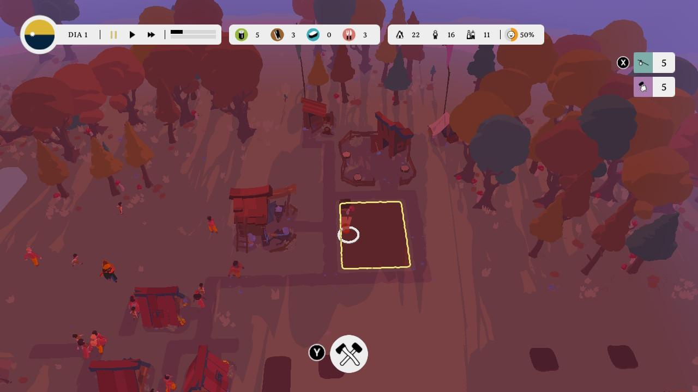
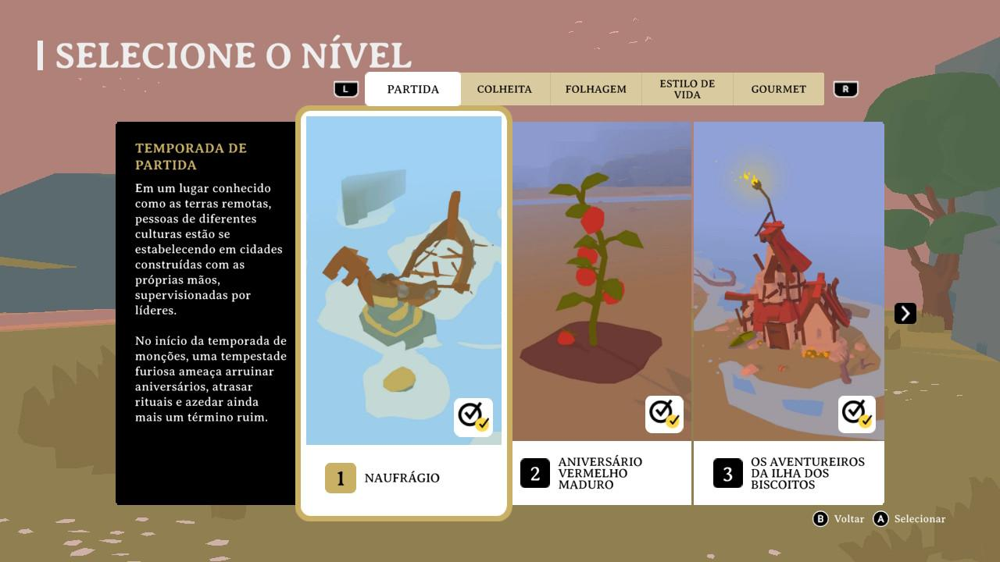
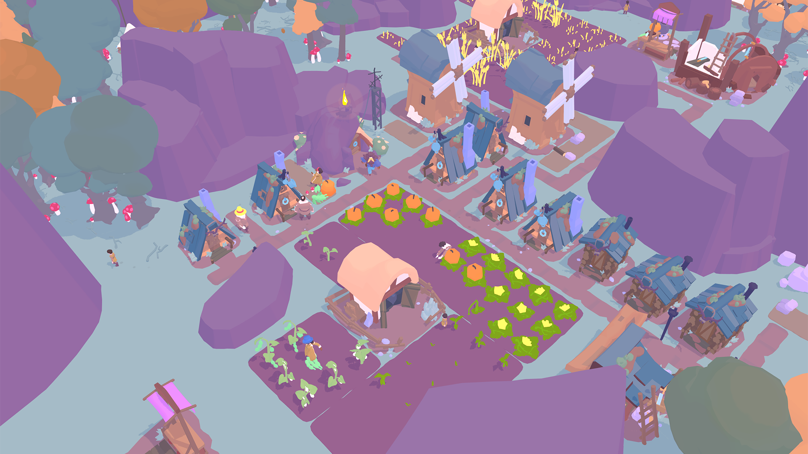

Review: Outlanders (Nintendo Switch)

Outlanders é um jogo de construção e gerenciamento de aldeias desenvolvido pela Pomelo Games. Nele, o jogador viaja até as pitorescas Terras Remotas, onde assume o papel de diferentes líderes e precisa transformar pequenos acampamentos em comunidades prósperas. Para isso, será necessário construir estruturas e administrar recursos em meio à atmosfera acolhedora e intimista desta região inexplorada. Mas será que essa fórmula é capaz de se destacar entre as opções atuais do gênero?
Ficha Técnica
🎮 Outlanders
Premissa e Proposta
A proposta de Outlanders é mais simples e sossegada do que a de muitos jogos de construção e gerenciamento. Aqui, o objetivo não é erguer um poderoso império que existirá por eras ou administrar uma complexa metrópole, mas acompanhar o desenvolvimento de pequenas comunidades e lidar com as necessidades de seus habitantes.
Essa abordagem também se reflete na maneira como o jogo apresenta seus desafios. Em vez de colocar o jogador diante de sistemas excessivamente complexos, Outlanders busca construir uma experiência acessível, na qual administrar recursos e atender às necessidades da população sejam tarefas que complementem a atmosfera tranquila das Terras Remotas, buscando o equilíbrio entre pitadas do gênero de sobrevivência e do gênero cozy.
É uma premissa relativamente modesta, mas que estabelece uma identidade clara para o jogo: mais do que construir pelo simples ato de construir, o conceito é observar pequenas comunidades crescerem e encontrar soluções para as demandas que surgem com o aumento da população.
Gameplay
Outlanders é dividido em dois modos de jogo: Campanha e Mundo Aberto.
A Campanha leva o jogador por diversos cenários, cada um com seu próprio relevo, vegetação, arquitetura, história e desafios que devem ser superados. Cada cenário começa em um acampamento diferente, liderado por uma figura exótica que possui sua própria história e objetivos.
Já o Mundo Aberto é um modo de jogo livre que permite ao jogador personalizar diversos aspectos da partida, como o leiaute do mapa, o estilo arquitetônico, o tamanho inicial da população e a quantidade de recursos naturais e de recursos disponíveis inicialmente no depósito do acampamento. Também é possível selecionar o líder do grupo e ativar ou desativar diferentes necessidades dos habitantes, como fome, felicidade e envelhecimento, entre outras.

No início de uma partida, o jogador deve utilizar seus seguidores para coletar e fabricar recursos básicos, que serão utilizados no desenvolvimento inicial do acampamento. Os recursos disponíveis no jogo são divididos em cinco grupos: Materiais de Construção, Comida Preparada, Cultivos, Coletáveis e Preocupação.
Cada recurso só pode ser obtido por meio de coleta ou fabricação, atividades que dependem do trabalho dos seguidores. A função que cada habitante irá exercer é determinada pela edificação à qual ele está atribuído. Por exemplo, um habitante atribuído à Base do Lenhador irá derrubar as árvores próximas para coletar madeira.
A Casa do Construtor é a única edificação que está sempre disponível no acampamento e não pode ser demolida. Os seguidores atribuídos a ela são responsáveis pela construção das demais edificações, desde que os recursos necessários estejam disponíveis.
As edificações são divididas em quatro grupos:
- Habitação: moradias destinadas ao alojamento dos seguidores.
- Locais de Trabalho: construções utilizadas para coletar ou fabricar materiais de construção.
- Construção de Comida: edificações utilizadas para coletar, plantar ou preparar alimentos.
- Construção de Preocupação: propriedades, monumentos e decorações utilizadas para suprir as Preocupações dos seguidores.
Além desses pontos, o jogo possui uma mecânica de Decretos do líder, leis que alteram o comportamento padrão dos seguidores. A cada nível, o jogador recebe um conjunto de três decretos, podendo ativar um ou mais deles a qualquer momento da partida. Uma vez ativado, o decreto só pode ser desativado após 72 horas. Depois desse período, porém, o jogador pode optar por mantê-lo ativo indefinidamente.
Os decretos podem ser considerados uma faca de dois gumes, pois trazem tanto aspectos positivos quanto negativos para o acampamento. Por exemplo, o decreto Trabalho Duro faz com que os seguidores trabalhem por mais tempo ao longo do dia. No entanto, esse esforço excessivo reduz drasticamente o nível de felicidade da população.
Seguidores, construções, recursos e decretos precisam ser utilizados em conjunto para que o acampamento possa se desenvolver. A distribuição adequada da mão de obra e o gerenciamento dos recursos são, portanto, elementos fundamentais para superar os desafios apresentados por cada cenário.
Progressão e Estrutura
A Campanha de Outlanders é dividida em 29 níveis, agrupados em 5 temporadas. Os níveis da primeira temporada introduzem o jogador às mecânicas centrais do jogo: coleta de recursos, construção de edificações, necessidades dos seguidores e uso dos decretos. A curva de aprendizado é bastante suave e não sobrecarrega o jogador com inúmeras informações, apresentando as novidades de maneira gradativa. No início de cada temporada, novas construções e recursos são introduzidos, enquanto os níveis finais colocam à prova todo o conhecimento adquirido ao longo da campanha.


Para superar um nível, o jogador deve cumprir o objetivo principal dentro do prazo estipulado. Outra condição de derrota ocorre quando a população permanece por muitos dias consecutivos com o medidor de felicidade abaixo dos 30%. Caso isso aconteça, o nível é considerado perdido, sendo necessário recomeçá-lo.
Todos os níveis também possuem um objetivo secundário que, quando concluído, garante um segundo check ✔️ no cartão do nível, exibido na tela de seleção de níveis.
História e Narrativa
A história de Outlanders (se é que podemos chamá-la assim) é extremamente simples, tanto em sua apresentação quanto em seu conteúdo. Ela é exposta de três maneiras:
A primeira aparece no menu de seleção de níveis, por meio de textos de dois parágrafos que explicam, de maneira geral, a temática da temporada selecionada: Partida, Colheita, Folhagem, Estilo de Vida e Gourmet.

A segunda consiste em um breve texto de apresentação que introduz o líder do acampamento. Essas introduções geralmente explicam de onde o personagem veio, que tipo de personalidade ele tem e o que deseja para sua comunidade.
Por fim, há as falas introdutórias dos líderes, que contextualizam a situação atual do acampamento antes de cada fase. Elas funcionam como uma espécie de miniconto, apresentado na caixa de diálogo inicial junto ao objetivo do nível.
Esses textos são o básico do básico para evitar que as Terras Remotas sejam uma página completamente em branco. Eles também despertam um interesse mínimo pelo universo do jogo e ajudam a dar algum contexto às situações apresentadas em cada fase. O problema é que Outlanders não desenvolve um arco narrativo capaz de conectar suas diferentes fases de maneira significativa, tampouco oferece uma conclusão que dê ao conjunto uma sensação de encerramento. Para quem busca uma experiência mais centrada na narrativa, essa ausência pode tornar a jornada decepcionante.
Direção de Arte, Gráficos e Áudio

Os gráficos de Outlanders têm uma proposta bastante estilizada e colorida, mais voltada para o charme e a atmosfera do que para o realismo. O estilo visual é um 3D esmerado e cartunesco, com personagens, casas, árvores e objetos construídos a partir de formas simplificadas e proporções caricatas. O mapa da cidade é apresentado de uma perspectiva elevada, que facilita a leitura e combina bem com a proposta de construção e gerenciamento.
Predominam tons pastéis de verdes, azuis, amarelos e cores terrosas, criando uma aparência alegre e aconchegante. Os personagens são pequenos e simpáticos, visualmente simples, mas contam com animações que ajudam a transmitir suas atividades com bastante personalidade. Árvores, casas, fazendas, moinhos e outras estruturas seguem a mesma direção visual, dando ao acampamento a aparência de uma pequena maquete viva. Essa direção de arte combina diretamente com a proposta do jogo, priorizando uma atmosfera acolhedora.
Os efeitos sonoros e a trilha sonora leve completam a ambientação cozy, criando a sensação de estar em uma comunidade cercada pela natureza. A trilha funciona bem durante longas sessões de gerenciamento, servindo como pano de fundo para a experiência e evitando uma sensação constante de intensidade ou urgência.
Desempenho e Aspectos Técnicos
No Nintendo Switch, o jogo roda muito bem na maior parte do tempo, tanto no modo portátil quanto no modo TV. No entanto, o desempenho começa a cair conforme a população cresce e o número de construções aumenta.
Em alguns níveis com mapas maiores e objetivos que exigem comunidades bastante desenvolvidas, a taxa de quadros pode cair drasticamente, principalmente nos momentos em que muitos seguidores estão ativos simultaneamente. Nessas situações, a queda de desempenho pode prejudicar a responsividade do cursor e fazer com que alguns comandos não sejam registrados corretamente. Quando isso acontece, o jogador é praticamente obrigado a recorrer a estratégias como "congelar o tempo" ou diminuir o zoom para recuperar um pouco de desempenho antes de realizar determinadas ações. É um problema que não compromete toda a experiência, mas se torna particularmente incômodo justamente nos níveis em que a comunidade está mais desenvolvida.
Veredito
Outlanders cumpre bem o papel de ser um jogo de construção e gerenciamento minimalista, com visuais e sons aconchegantes. Por se tratar de uma experiência acolhedora e de ritmo tranquilo, aspectos como a sobrevivência também são extremamente simples, exercendo mais o papel de adicionar uma camada de atenção ao gerenciamento para evitar que a experiência cozy se torne entediante, em vez de representar uma fonte real de preocupação ou estresse para o jogador.
No geral, Outlanders não é um jogo especialmente desafiador, embora alguns níveis exijam um pouco mais de atenção à estratégia e ao uso dos conceitos apresentados anteriormente. É uma experiência simples e convidativa, com uma atmosfera acolhedora e o mínimo de tensão necessário para manter o jogador engajado no cumprimento dos objetivos da campanha.